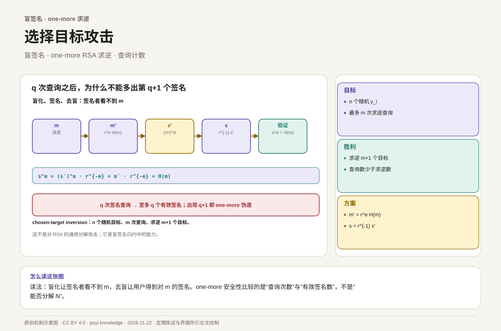
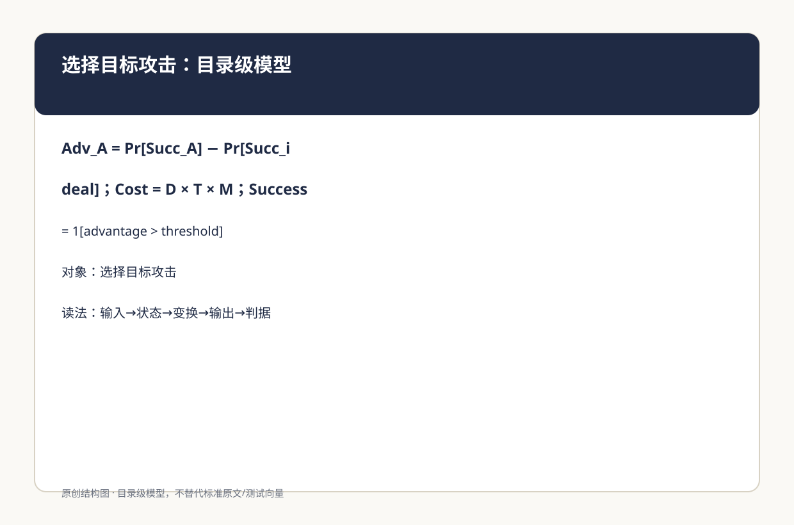

原理与机制
攻击：选择目标攻击（Chosen-Target Attack）。### 先把“选择目标攻击”限定清楚
以 Chaum 的 RSA 盲签名为例。签名者公钥为 (N,e)，私钥指数 d。用户想把消息 m 取得签名，但不愿让签名者看到 m：
1.选随机盲化因子 r，计算 m′ = r^e · H(m) mod N； 2.把 m′ 发给签名者，得到 s′ = (m′)^d mod N； 3.去掉盲化，s = r^{-1} · s′ mod N。s^e = (s′)^e · r^{-e} = m′ · r^{-e} = H(m) mod N。签名者只看到 m′，不知道 m；用户得到对 m 的有效签名。### one-more 归约
若攻击者能对 q 次签名查询得到 q+1 个有效消息-签名对，就能把这些对嵌入 chosen-target inversion 游戏，解出比查询数更多的 RSA 逆。反之，若 chosen-target inversion 难，Chaum 方案在随机预言机模型下满足 one-more unforgeability。这里的“攻击”是归约中的能力，不是一条可直接运行的分解算法。

为什么重要
盲签名的隐私目标与普通签名不同：签名者不知道消息内容，因此不能按消息做访问控制。若安全性只要求“不能伪造一个新消息的签名”，攻击者可能通过一次签名查询得到多个可用签名，破坏电子现金的“一次提取、一次花费”记账。one-more unforgeability 把“查询数”和“有效签名数”直接比较，正好覆盖这种超额伪造。### chosen-target 与 known-target 的区别
known-target 要求攻击者求逆所有给定目标；chosen-target 允许它只挑一部分目标求逆，只要数量超过查询数。Bellare 等人的主要结果之一是这两个问题多项式等价；因此证明其中一个难，就足以支撑 Chaum 方案的安全性。这个等价性是归约结果，不意味着两个游戏在实现上完全一样。盲签名还依赖盲化函数的正确性、签名者的状态管理、随机数质量和防止重复消费的机制。one-more 不可伪造性不会自动解决这些工程问题；它只覆盖“签名数量”这一维度。
应用与实例
1.明确模型：RSA 盲签名、盲 Schnorr、盲 BLS 还是 OPRF 变体；不同模型的困难问题不同。2.写清查询计数：q 次签名查询后允许输出多少有效签名；one-more 要求 q+1 即失败。3.检查盲化/去盲公式：m′ 与 s 的关系是否保持；验证方程是否成立。4.检查归约：方案安全性是否归到 chosen-target/known-target inversion，还是只归到普通 RSA 单向性。5.检查随机预言机假设与哈希定义域；Chaum 方案的证明在 ROM 中。6.检查工程层：盲化因子是否可预测、签名者是否记录已用盲化值、是否防重复消费。### 应用场景
电子现金、隐私令牌、匿名凭证、Privacy Pass 类协议都使用盲签名或 OPRF。评估时不要把“盲”当成“安全”的同义词；要分别证明隐私（blindness）与不可伪造（one-more unforgeability）。

边界与攻击面
1.不是通用 RSA 攻击。chosen-target inversion 假设 RSA 求逆难；它不提供分解 N 的方法。2.不是对所有盲签名成立。不同盲签名方案的盲化关系与困难问题不同；不能把 Chaum 的归约直接套到盲 Schnorr 或盲 BLS。3.盲化不自动带来不可伪造。一个方案可以完全隐藏消息，但仍然允许一次查询生成多个签名；隐私与不可伪造是两个独立目标。4.随机预言机模型。Chaum 方案的证明在 ROM 中；标准模型中的实例化需要额外论证。5.签名者状态与重复消费。若签名者不记录已签的盲化值，或用户能重复使用同一签名，one-more 模型之外的工程攻击仍可能发生。6.盲化因子质量。r 可预测或重复会使消息关联、隐私泄漏，甚至破坏代数关系。
历史与背景
Chaum 在 1983 年的 CRYPTO 论文中提出盲签名，并把它用于不可追踪的电子支付：银行在看不到消息内容的情况下签名，用户之后可证明支付合法，但银行无法把签名与用户对应。这是“盲化”作为隐私原语的起点。### 2003：one-more RSA 反转的形式化
Bellare、Namprempre、Pointcheval 与 Semanko 在 Journal of Cryptology 2003 的论文中形式化 one-more-RSA-inversion 问题，定义 chosen-target 与 known-target 两个变体，证明它们多项式等价，并在随机预言机模型下证明 Chaum 盲签名方案的安全性。此后 one-more 不可伪造性成为盲签名安全定义的标准语言。
逐步示例与核验
形式模型与复算步骤
[\mathrm{Adv}^{\mathrm{attack}}_A(\lambda)=\Pr[\mathrm{Game}_A(\lambda)=1]-\frac12]
选择目标攻击的公开参数、密钥/随机数与消息；变量说明：λ 安全参数；Game 把攻击目标写成挑战-响应游戏。1.定义挑战与获胜条件。2.给攻击者 oracle 访问。3.计算优势并与目标界比较。边界：公式只覆盖已登记的参数与假设；参数取值、标准版本和实现细节仍以来源为准。
参考出处
- Wikipedia search entry for 选择目标攻击. https://zh.wikipedia.org/w/index.php?search=%E9%80%89%E6%8B%A9%E7%9B%AE%E6%A0%87%E6%94%BB%E5%87%BB
- Handbook of Applied Cryptography (Menezes, van Oorschot, Vanstone). https://www.cacr.math.uwaterloo.ca/hac/